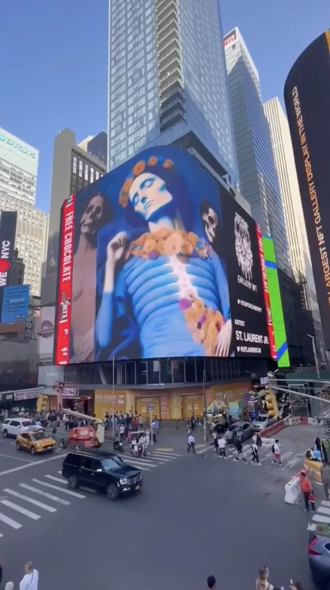
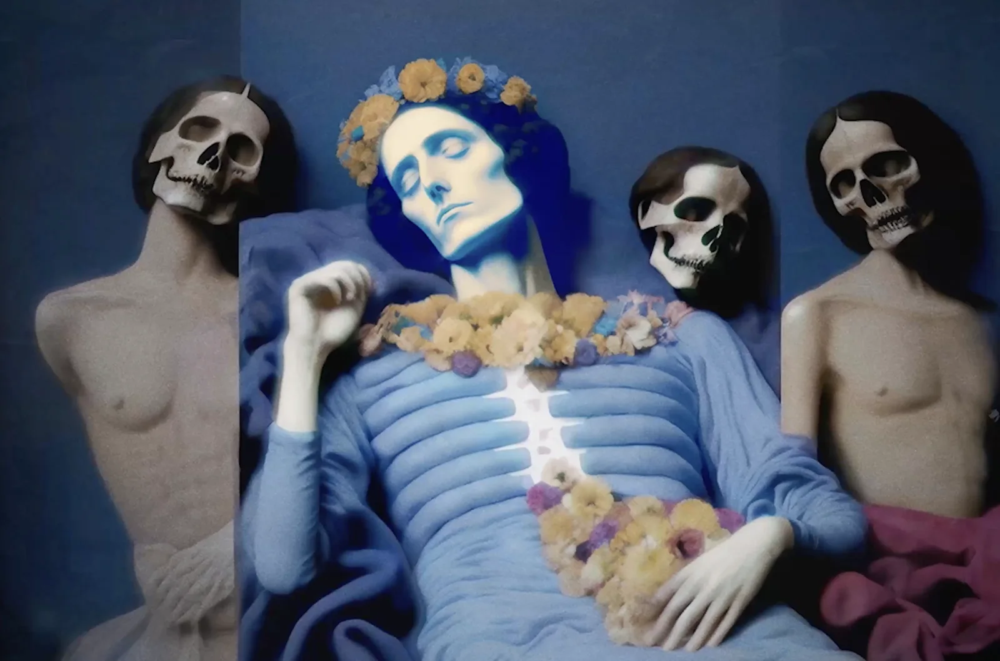

Work on Times Square · «Работа на Times Square»
New York · Times Square · 2023
A digital work shown on a billboard.
Photos and Images


New York · Times Square · 2023
A digital work shown on a billboard.

